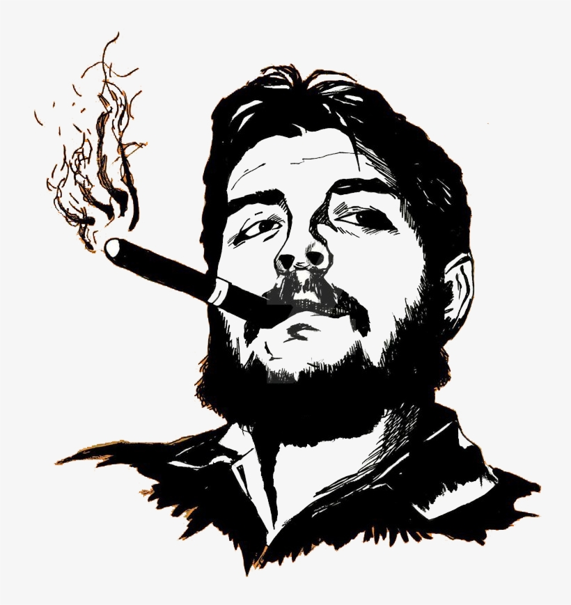

Che Guevara
Ernesto "Che" Guevara was an Argentine Marxist revolutionary, physician, author, guerrilla leader, diplomat, and military theorist. A major figure of the Cuban Revolution, his stylized visage has become a ubiquitous countercultural symbol of rebellion and global insignia in popular culture.
Read More
